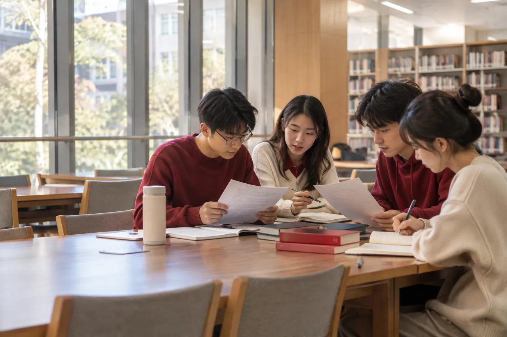

面向入党积极分子、发展对象、预备党员及党员，提供党务知识学习与阶段自测。
把理论学习、组织生活和党员教育融入日常，在常学常新中坚定理想信念。
党员大会、党支部委员会会议、党小组会和党课。
每月相对固定一天，开展学习、组织生活和民主议事。
交流思想、检视问题，认真开展批评和自我批评。

向党组织表达入党意愿，了解党员条件与基本要求。
接受党组织培养、教育和考察，持续深化理论学习。
了解政治审查、集中培训等发展要求，端正入党动机。
预备期为一年。认真参加组织生活，在实践中接受教育和考察。
预备期满后，按规定程序提出转正申请并接受组织审议。